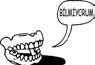

\1\2ğaç\3
George Washington’un takma dişleri neyden yapılmıştı?

Büyük ölçüde hipopotamdan.
Washington dişlerinden muzdaripti. John Adams’a göre, Washington, dişleriyle Brezilya kestanesi kırdığı için dişlerini kaybetmişti; bununla birlikte, günümüzdeki tarihçiler bunun nedeninin muhtemelen, çiçek ve sıtma gibi hastalıkları tedavi etmek için kendisine verilen cıva oksit olduğunu ileri sürüyor.
Washington ilk dişini 22 yaşındayken kaybetti ve başkan olduğu zaman yalnızca bir dişi kalmıştı. Washington’un bir sürü takma dişi oldu; bunların dört tanesini John Greenwood adlı bir dişçi yaptı.
Yaygın kanının aksine bu takma dişlerden hiçbiri tahtadan yapılmadı. Washington başkan olduğu zaman yapılan takma diş, hipopotam ve fil dişinden oyularak altın yaylarla tutturuldu. Hipopotam dişi, takma damak kısmında kullanıldı ve buraya gerçek insan dişi ile az miktarda at ve eşek dişi eklendi.
Diş sorunları Washington’a sürekli rahatsızlık veriyordu, bu yüzden afyon tentürü kullanıyordu ve çektiği acı, Washington’un başkanlık ofisindeyken çizilmiş portrelerinin çoğuna yansımıştı – şu anda halen kullanımda olan bir dolarlık banknotun üzerindeki resim de buna dahildir.
Ağzı hipopotam dişiyle dolu bir adamın aksi bakışlarının, Başkan’la arası iyi olmayan portreci Gilbert Stuart tarafından kasıtlı olarak abartıldığı sanılıyor.
Modern sentetik maddelerin icadına kadar, kaliteli takma dişler başka bir insanın dişlerinden yapılıyordu ama bunları edinmek zordu. Ayrıca bu dişler, çürükse ya da önceki sahibinde frengi varsa dökülebiliyordu.
Doğru dürüst takma dişlerin en iyi kaynağı ölmüş (ama ölmeden önce sağlığı yerinde olan) genç insanlardı ve bunları bulmanın en iyi yolu savaş alanıydı.
Bu savaş alanlarından biri Waterloo’ydu; bu savaşta 50.000 kişi öldü ve ölenlerin dişleri takma diş piyasasında satılmak üzere topluca yağmalandı. Bu olaydan sonra takma dişler yıllarca (başka bir yerden geldikleri zaman bile) “Waterloo dişleri” diye bilindi.
Takma dişlerin yapımında gerçek insan dişleri, Amerikan İç Savaşı’nın bereketli bir kaynak sunduğu 1860’lara kadar kullanıldı.
Yapay takma diş 19. yüzyılın sonunda ortaya çıktı. Denenen ilk maddelerden biri selüloitti, ama bunda belirgin bir başarı elde edilemedi.
Selüloitten yapılan takma dişlerin tadı pinpon topununkine benziyordu ve sıcak çay içtiğinizde eriyordu (bkz. s. 134).